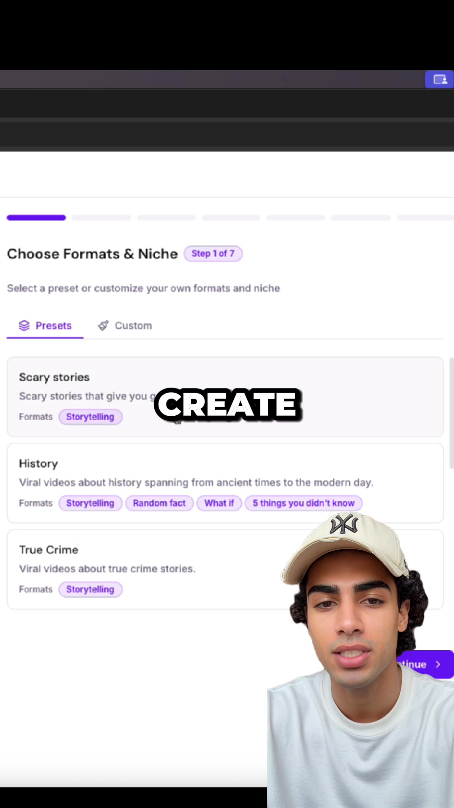

Facebook Reel｜AI 無臉短影音自動生成與自動發布工具的「五分鐘開頁」主張
這則 Facebook Reel 由 Jay Navarro 發布，公開文案主張：他終於開了第一個 faceless page，而且「大概 5 分鐘」就完成，因為有工具可以自動建立並發布影片；不需要剪輯、不需要上傳，只要讓系統自動化運作。
本文把它視為「AI 無臉短影音自動化」的趨勢樣本：創作者不再只用 AI 產生腳本或素材，而是把 niche 選擇、影片生成、排程與多平台發布打包成一條半自動/全自動流程。

來源可見資訊
| 欄位 | 內容 |
|---|---|
| 平台 | Facebook Reel |
| 作者 | Jay Navarro |
| canonical URL | `https://www.facebook.com/reel/752403380748648` |
| 分享 URL | `https://www.facebook.com/share/r/14ku3X8oEbG/` |
| 公開互動 | 約 3,757 萬次觀看、3.1 萬個心情；頁面另顯示 5,421、5,687 等互動/轉發數字 |
| 公開文案 | “I finally launched my first faceless page. It took me like 5 minutes because there's a tool that creates AND posts the videos for you automatically. No editing. No uploading. Just pure automation. I had to test it myself.” |
Facebook 登入彈窗遮住大部分影片內容，因此本文只保存公開 metadata、封面圖與可見畫面；完整影片步驟、留言區 CTA 或私下提供的工具連結並未取得。
封面截圖 OCR / 視覺觀察
封面中可見一個紫色系的產品 UI，畫面上方像是 web app / SaaS 的設定流程。主要文字包括：
- `Choose Formats & Niche`
- `Step 1 of 7`
- `Select a preset or customize your own formats and niche`
- tabs：`Presets`、`Custom`
- preset cards：
- `Scary stories`
- `History`
- `True Crime`
- format badges：
- `Storytelling`
- `Random fact`
- `What if`
- `5 things you didn't know`
- 右下角可見紫色 `Continue` 按鈕的一部分
- 畫面中央有大字字幕 `CREATE`
這代表影片展示的工具很可能採用「先選 niche / format，再自動產出短影音系列」的流程，而不是單次輸入 prompt 生成一支影片。
影片主張可以確認到哪裡？
公開 Reel 本身沒有露出清楚工具名稱，因此不能把畫面直接歸因給某個特定 SaaS。不過，這類能力在市場上已有多個官方產品頁可交叉確認：
### 1. Autopostr：AI faceless videos + auto-post
Autopostr 官方頁主張它可讓 AI 生成 faceless videos，並自動發布到 Instagram、TikTok 與 YouTube；頁面文案包括 “No filming, no editing — grow on autopilot”，並描述 Pick a Niche、We Create Daily、Auto-Post Everywhere 的三步驟流程。這與 Reel 的「不剪輯、不上傳、自動發布」主張高度相近。
但目前沒有公開證據能確認 Jay Navarro 影片畫面中的工具就是 Autopostr，因此本文只把 Autopostr 作為同類能力的官方驗證案例。
### 2. HeyGen Faceless Video：從 script / prompt 到可發布影片
HeyGen 的 faceless video 官方工具頁主張：貼上 script、prompt 或 topic，就能得到含 narration、captions、B-roll 的 finished faceless video，且 “No camera, no editing, ready to post to YouTube, TikTok, and Instagram”。這確認了「無臉影片生成」本身已是主流產品能力。
### 3. Opus Agent Faceless AI Video Generator：文字/腳本到 social-ready content
Opus 的 Agent faceless workflow 則定位為：把 text、scripts 或 blog posts 轉成可發布的 faceless video，包含 motion graphics、royalty-free visuals、AI voiceover，並輸出 social-ready content。這代表同類工作流也正在被 agent 化，而不只是傳統剪輯模板。
對 AI 學習雷達的意義
這支 Reel 重要的不是「某個神秘工具五分鐘賺流量」，而是它反映短影音自動化產品正在把過去分散的步驟整合成 wizard：
- 選 niche：例如恐怖故事、歷史、true crime。
- 選 format：storytelling、random fact、what if、listicle。
- 生成腳本：依 format 自動寫短影音敘事結構。
- 生成視覺與配音：AI 圖像/影片、B-roll、voiceover、caption。
- 排程發布：連接 TikTok、Instagram、YouTube 等帳號。
- 追蹤表現：用觀看、互動、留存決定下一批內容。
這與過去 AI 學習雷達收錄的 MoneyPrinterTurbo、video-autopilot-kit、short-video-factory、Blotato、ChatCut 等案例同屬一個趨勢：短影音製作正從「人手剪輯」轉成「可被 agent / workflow 操作的內容生產線」。
使用建議與風險
### 適合用途
- 課程或講座中示範「AI 內容產線」概念。
- 測試 niche / format 是否有觀看需求。
- 建立品牌帳號的素材原型，而不是直接大量灌水。
- 把一篇文章或一段知識點轉成多支短影音草稿。
### 風險與限制
- **工具名稱未公開確認**：Reel metadata 與封面沒有清楚揭露工具名稱，不能把影片畫面歸因到特定產品。
- **自動發布不等於自動成長**：平台演算法、內容品質、受眾定位與帳號權重仍是關鍵。
- **容易產生低品質內容農場**：無臉頻道若只追求量，可能快速變成 AI slop。
- **版權與素材授權**：若工具使用第三方影片、音樂、聲音或風格仿作，需要檢查授權與平台政策。
- **平台帳號風險**：大量自動發布可能觸發平台風控，尤其是新帳號或重複內容。
- **事實查核需求**：歷史、犯罪、健康、財經等主題不能只依 AI 生成腳本，仍需人工查核。
欒帥可用的落地角度
若要把這類工具納入 AI 課程或實作示範，建議不要教「無腦自動化大量發片」，而是教成三層架構：
- **內容策略層**：niche、受眾、系列格式、平台定位。
- **AI 生產層**：腳本、分鏡、配音、字幕、B-roll、封面。
- **治理層**：查核、授權、人工審稿、發布節奏、數據回饋。
這樣可以把「五分鐘開頁」的行銷鉤子，轉化成更可靠的 AI workflow 教學案例。